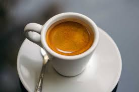
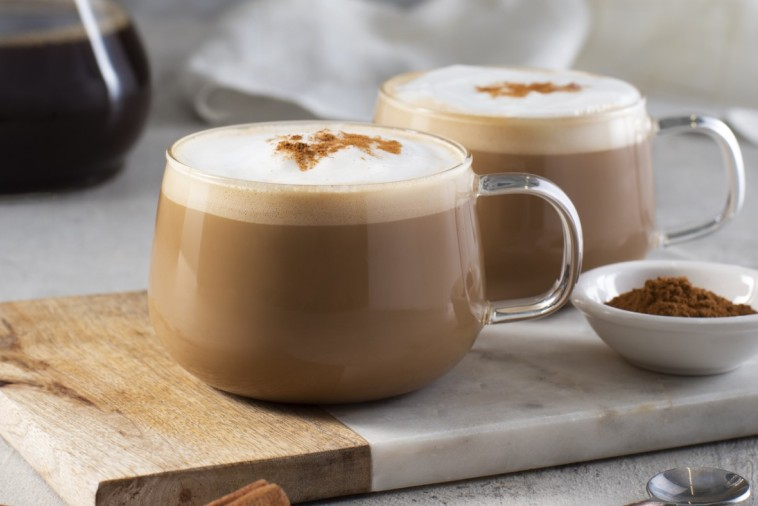
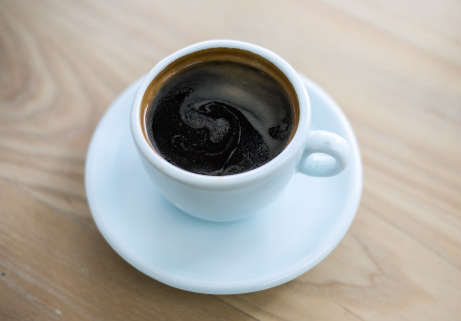
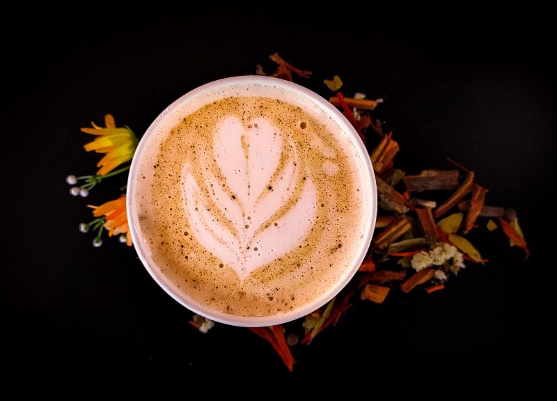

Эспрессо
Крепкий и насыщенный кофе, приготовленный путем пропускания горячей воды через мелко молотый кофе.

Капучино
Кофе с равными частями эспрессо, горячего молока и молочной пены.

Латте
Мягкий кофе с большим количеством горячего молока и небольшой порцией молочной пены.

Американо
Эспрессо, разбавленный горячей водой, что делает его менее крепким.

Раф
Кофе с добавлением сливок и ванили, часто подается с взбитыми сливками.